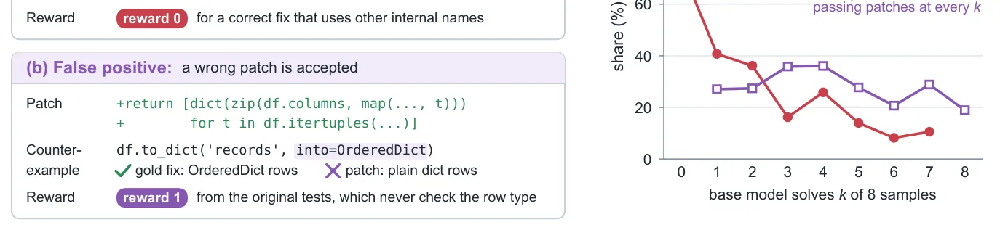
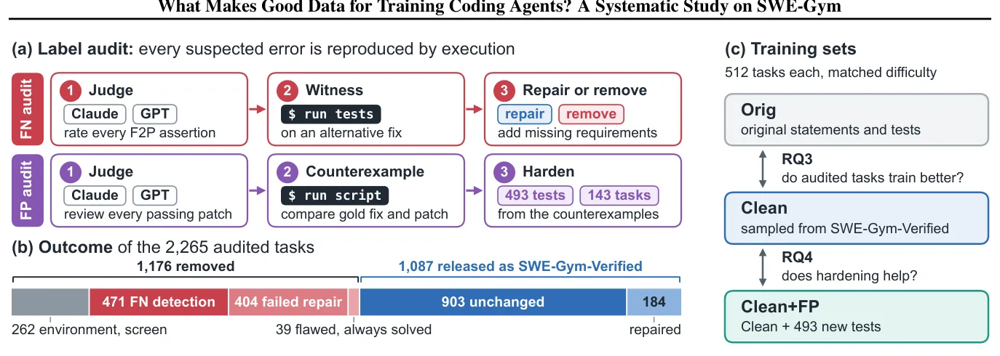
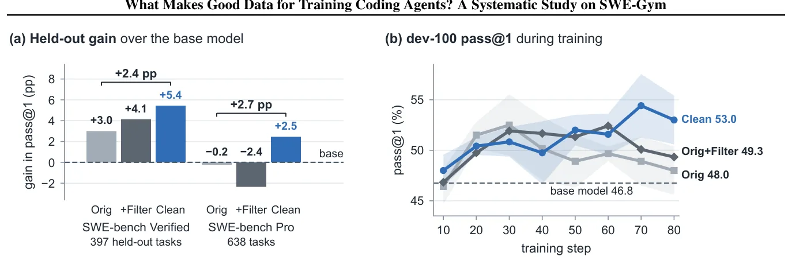

O problema oculto nos dados de treinamento
O aprendizado por reforço (RL) tornou-se o padrão para treinar agentes de codificação, onde modelos como o Qwen3.5-9B aprendem a corrigir bugs em repositórios reais. O processo geralmente usa coleções de tarefas extraídas do GitHub, como o SWE-Gym. Nessas coleções, cada tarefa consiste em um repositório, uma issue (problema reportado) e os testes unitários do pull request que resolveu o problema. O agente vê a issue, mas não os testes; ele recebe recompensa apenas se seus patches (correções) fizerem os testes passarem. Os testes ocultos atuam, portanto, como os rótulos de recompensa.
O problema oculto nos dados de treinamento
O problema fundamental é que a validação inicial de uma tarefa no SWE-Gym é insuficiente. A coleção aceita uma tarefa apenas verificando que o patch de referência passa nos testes e que o código original falha. Isso garante que a recompensa é alcançável, mas não garante que ela seja correta. Testes podem rotular incorretamente patches de duas maneiras principais: falsos negativos (FN) e falsos positivos (FP). Um falso negativo ocorre quando um patch correto é rejeitado porque o teste verifica algo não especificado na issue. Um falso positivo ocorre quando um patch incorreto é aceito porque os testes não cobrem um caminho de código quebrado.
O problema oculto nos dados de treinamento
Receitas padrão de RL muitas vezes descartam tarefas que o modelo nunca resolve ou grupos sem variância de recompensa, sem inspecionar a qualidade dos testes. Isso cria um viés perigoso: uma taxa de passagem baixa pode indicar dificuldade real, mas também pode indicar que os rótulos estão errados. Se o teste rejeita correções válidas, o agente recebe feedback negativo injusto, aprendendo padrões errados ou desistindo de soluções corretas. Os autores deste paper questionam: o que torna uma tarefa boa para treinamento? A resposta exige auditar a correção dos rótulos de recompensa, não apenas a dificuldade da tarefa.

Metodologia: Audição executada com LLMs
Para responder à pergunta de pesquisa, os autores realizaram uma auditoria sistemática do SWE-Gym. O processo não se baseia apenas em julgamento humano ou em heurísticas simples, mas em execução real de código. Eles utilizaram duas famílias de grandes modelos de linguagem (LLMs), Claude Opus 5.5 e GPT-6.1 Sol, para atuar como juízes. Cada afirmação (assertion) nos testes de cada tarefa foi avaliada contra a descrição da issue.
Metodologia: Audição executada com LLMs
A metodologia é rigorosa para evitar falsos positivos na própria auditoria. Uma suspeita de erro conta apenas se a execução reproduzir o problema. Para falsos negativos, os autores geraram patches alternativos que seguem estritamente o que a issue pede, mas que foram rejeitados pelos testes originais. Se um patch alternativo, logicamente correto, falha nos testes, a tarefa é marcada como FN-flawed (defeituosa por falso negativo). Para falsos positivos, eles procuraram contra-exemplos executáveis: entradas que fazem o patch passar nos testes originais, mas que expõem uma falha lógica não coberta pelos testes existentes.
Metodologia: Audição executada com LLMs
Essa abordagem de 'audição executada' permite distinguir entre tarefas difíceis e tarefas mal construídas. Os autores não confiam apenas na opinião dos LLMs; eles exigem evidência de execução. O objetivo era transformar o SWE-Gym bruto em um conjunto de dados verificado, onde cada veredito de erro tem uma prova concreta de que o teste está falhando em sua função de rotulagem correta. Esse processo resultou no lançamento do SWE-Gym-Verified, contendo 1.087 tarefas auditadas, cada uma com seu veredito e evidência executada.

Resultados: Falsos negativos dominam as tarefas não resolvidas
Os resultados da auditoria revelaram uma correlação forte e surpreendente entre a dificuldade percebida de uma tarefa e a presença de falsos negativos. Dos 2.001 tarefas auditadas, 55% apresentaram pelo menos um erro de rótulo. O ponto crucial é que esses erros não são distribuídos uniformemente. Nas tarefas que o modelo base (Qwen3.5-9B) nunca resolveu (taxa de passagem zero), 74% eram afetadas por falsos negativos. Em contraste, apenas 20% das tarefas que o modelo às vezes resolvia tinham esse problema.
Resultados: Falsos negativos dominam as tarefas não resolvidas
Isso significa que 'não resolvido' muitas vezes significa 'mal rotulado'. Os falsos negativos frequentemente envolvem comportamentos que a issue não solicita, como interfaces não especificadas, strings exatas ou escolhas de design arbitrárias. Por exemplo, um teste pode exigir o uso de um método privado ou uma flag interna que não é mencionada no relatório do bug. Quando os autores repararam essas tarefas, adicionando os requisitos ausentes aos testes, a taxa de passagem do modelo base aumentou em média 2.1 pontos em uma escala de oito amostras. Em um caso extremo, uma única frase adicional no teste fez o modelo passar de zero para sete de oito tentativas.
Resultados: Falsos negativos dominam as tarefas não resolvidas
Os falsos positivos também foram comuns, mas ocorreram em diferentes níveis de dificuldade. Cerca de 26,1% dos patches que passavam nos testes do conjunto limpo eram falsos positivos. Isso indica que mesmo em tarefas 'fáceis' ou resolvidas, o agente pode estar recebendo recompensa por soluções incorretas. Esses patches enganosos passam nos testes originais porque os testes não cobrem certos caminhos de código ou tipos de dados. A presença de falsos positivos representa uma forma de 'reward hacking', onde o agente otimiza para passar nos testes, não para resolver o problema real.
Experimento de treinamento: Dados auditados vencem
Para medir o impacto prático desses erros, os autores treinaram o modelo Qwen3.5-9B usando RL (algoritmo GRPO) em três conjuntos de treinamento de 512 tarefas, todos balanceados por dificuldade e tamanho. O conjunto 'Orig' usava as tarefas originais do SWE-Gym. O conjunto 'Clean' usava tarefas do SWE-Gym-Verified, onde falsos negativos foram reparados ou removidos. Um terceiro conjunto, 'Orig+Filter', aplicou um filtro de taxa de passagem ao conjunto original, removendo tarefas não resolvidas, mas sem auditar os testes.
Experimento de treinamento: Dados auditados vencem
O treinamento foi realizado com o mesmo número de passos e sementes aleatórias para garantir comparabilidade. Os modelos foram avaliados em benchmarks mantidos fora dos dados de treinamento: SWE-bench Verified e SWE-bench Pro. O modelo treinado no conjunto 'Clean' (dados auditados) superou significativamente o modelo treinado no conjunto 'Orig'. Especificamente, ele obteve ganhos de 2.4 pontos no SWE-bench Verified e 2.7 pontos no SWE-bench Pro.
Experimento de treinamento: Dados auditados vencem
O resultado mais crítico é a comparação com o 'Orig+Filter'. O filtro simples de taxa de passagem, uma prática comum na área, não mostrou ganhos de desempenho. Isso confirma que remover tarefas não resolvidas não é suficiente, pois essas tarefas provavelmente contêm falsos negativos que prejudicam o aprendizado. A melhoria veio exclusivamente da correção da qualidade dos rótulos de recompensa, não da redução da dificuldade ou do volume de dados. Isso demonstra que a precisão do sinal de recompensa é mais importante do que a quantidade de experiências de treinamento.

Limitações e trabalho futuro
Apesar dos resultados promissores, os autores destacam várias limitações. A auditoria dependeu de LLMs como juízes, o que introduz viés potencial. Embora tenham usado duas famílias de modelos e exigido execução para confirmar erros, os vieses dos LLMs não podem ser totalmente caracterizados. O conjunto auditado também é relativamente pequeno (1.087 tarefas), e não está claro se os mesmos padrões se mantêm em escalas maiores ou para outras arquiteturas de modelos.
Limitações e trabalho futuro
Outra questão em aberto é a eficácia da reparação versus remoção de tarefas defeituosas. Os autores repararam apenas 42 tarefas alterando o enunciado ou os testes, mas a maioria foi removida ou substituída. Não está claro se a reparação sistemática de todos os falsos negativos traria ganhos ainda maiores. Além disso, o estudo não resolveu completamente o problema dos falsos positivos. Embora tenham identificado que um quarto dos patches que passam são incorretos, adicionar novos testes para capturá-los não mudou as pontuações nos benchmarks de forma detectável, sugerindo que a remoção de falsos positivos pode ser menos crítica do que a eliminação de falsos negativos para o desempenho inicial.
Limitações e trabalho futuro
O impacto dual também é mencionado: agentes de codificação mais capazes podem ser usados para escrever código malicioso ou automatizar tarefas com consequências econômicas. Os dados vêm de repositórios públicos, mas a capacidade de gerar patches eficientes eleva os riscos. Os autores lançaram o SWE-Gym-Verified e o pipeline de auditoria para permitir que a comunidade verifique e conteste vereditos individuais, promovendo transparência e melhoria contínua dos conjuntos de dados de treinamento.
Conclusão
Este paper demonstra que a qualidade dos dados de treinamento é tão crítica quanto a arquitetura do modelo ou o algoritmo de RL. No SWE-Gym, a maioria das tarefas que parecem difíceis são, na verdade, mal construídas, com testes que rejeitam correções válidas. Ao auditar e corrigir esses rótulos, os autores mostram que é possível treinar agentes mais capazes sem aumentar o custo computacional. A mensagem central é clara: em RL para codificação, a taxa de passagem não é suficiente. Os rótulos de recompensa devem ser verificados executavelmente, ou o agente aprenderá a enganar os testes, em vez de resolver problemas reais.
O que fica
- 74% das tarefas que um modelo base nunca resolve tem testes que rejeitam correções válidas (falsos negativos).
- Treinar com dados auditados aumenta a pontuação em benchmarks em 2.4 a 2.7 pontos, sem aumentar o custo computacional.
- Um terço dos patches que passam nos testes originais são falsos positivos, enganando o agente com recompensas erradas.
- O conjunto SWE-Gym-Verified libera evidências executadas para cada veredito, permitindo auditoria transparente.
Paper original: What Makes Good Data for Training Coding Agents? A Systematic Study on SWE-Gym
Comentários
Nenhum comentário ainda. Seja o primeiro.